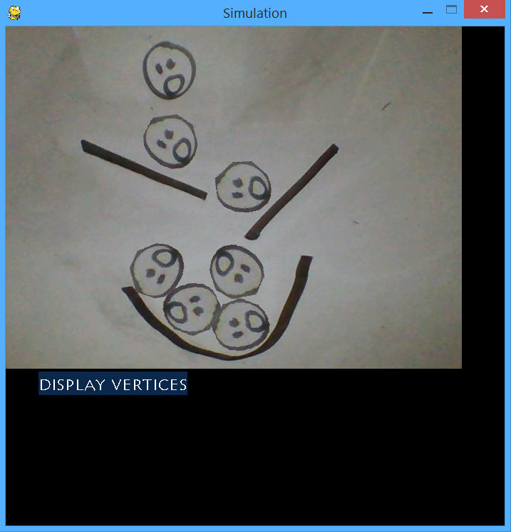

David Santana
A student and a CS lab tutor at UNCG studying computer science with a minor in mathematics
This summer I will be joining Google as an engineering practicum intern!
I'm constantly working on some new project outside of class, these are some examples of them
I highly encourage a good look through my github, I really am proud of what I've done with them! More to come.
Project Highlights
I've created a lot projects, here are some of my favorite ones! Some more are in my github if you want to check them out!
Physics on paper
Given a drawing, this program will use your web-cam to find the shapes you've drawn, then turn into 2D objects! You can click on them and they will fall and collide with your other drawings!
Sorting visualizer
This program lets you see sorting algorithms do their work! You can change the input size and see a visualization of different sorting algorithms.

Asteroid path finding
Randomly generates a maze filled with "asteroids" and "gravity wells" and will find a path between two points using the A* search algorithm! It will show an animation of process of finding the path. You can even edit the map and the program will re-find the shortest path between the two points.

Regex fractals
This will recursively split the screen into 4 quadrants, each quadrant holds it's respective quadrant and it's parent's number together as a string. After we have a split each quadrant small enough, you can feed the program a regex pattern and each cell that matches it will be colored.

RateMyGenie
This is a chrome extension that takes ratings from ratemyprofessor.com and puts them into UNCG Genie's course listing page. So students can easily see professor's ratings as they are looking for courses!
Image Palette
This is my first twitter bot! If you tweet at it with two images, it will re-create the second image using only the pixels in the first image! Really cool effects are made and I love the results.

Live Examples

I have a little demo of one of my projects called photoquads
It takes an image and, using a quad tree, it will split the image into rectangles depending on which node in the tree is the farthest from it's estimated average color.
I also made a twitter bot you should tweet at! it takes two images and using only the pixels in the first image, it will re-create the second
It's handle is @ImagePalette
Also made a chrome extension that displays the professors ratings from ratemyprofessors.org and puts them in UNCG course listing page
Here's the chrome web store link!
Randomly generated art
To say thanks for visiting! It may be ugly but it's yours.
This "art" is created by simulating Conway's Game of life for a certain amount of cycles, each time a cell is to "die" or "be created" I increment a counter on that cell, which is used to refer to an index in an array of colors. At the end, I draw all the cells. Dead cells are filled with the color the cell is referring to, live cells are always black regardless of what color they refer to. This is the result of that!